| Model Type | n Features | Accuracy | Precision | Recall | F1-Score | ROC AUC |
|---|---|---|---|---|---|---|
| Baseline RF (NDII) | 1 | 0.860 | 0.862 | 0.860 | 0.860 | 0.936 |
| Tuned RF (NDII) | 1 | 0.911 | 0.918 | 0.911 | 0.911 | 0.953 |
| Baseline LGBM (NDII) | 1 | 0.913 | 0.922 | 0.913 | 0.914 | 0.958 |
| Tuned LGBM (NDII) | 1 | 0.913 | 0.922 | 0.913 | 0.914 | 0.959 |
| Baseline SVM (NDII) | 1 | 0.913 | 0.922 | 0.913 | 0.913 | 0.949 |
| Tuned SVM (NDII) | 1 | 0.911 | 0.920 | 0.911 | 0.911 | 0.965 |
| Baseline RF (NDVI) | 1 | 0.818 | 0.819 | 0.818 | 0.818 | 0.910 |
| Tuned RF (NDVI) | 1 | 0.893 | 0.896 | 0.893 | 0.894 | 0.935 |
| Baseline LGBM (NDVI) | 1 | 0.919 | 0.921 | 0.919 | 0.919 | 0.937 |
| Tuned LGBM (NDVI) | 1 | 0.918 | 0.921 | 0.918 | 0.918 | 0.937 |
| Baseline SVM (NDVI) | 1 | 0.920 | 0.923 | 0.920 | 0.920 | 0.941 |
| Tuned SVM (NDVI) | 1 | 0.915 | 0.920 | 0.915 | 0.916 | 0.963 |
| Baseline RF (Multi) | 8 | 0.900 | 0.907 | 0.900 | 0.901 | 0.939 |
| Tuned RF (Multi) | 8 | 0.904 | 0.911 | 0.904 | 0.905 | 0.940 |
| Baseline LGBM (Multi) | 8 | 0.898 | 0.903 | 0.898 | 0.898 | 0.945 |
| Tuned LGBM (Multi) | 8 | 0.900 | 0.906 | 0.900 | 0.901 | 0.948 |
| Baseline SVM (Multi) | 8 | 0.913 | 0.921 | 0.913 | 0.913 | 0.959 |
| Tuned SVM (Multi) | 8 | 0.913 | 0.922 | 0.913 | 0.914 | 0.975 |
| Baseline RF (Hybrid) | 4 | 0.917 | 0.921 | 0.917 | 0.917 | 0.964 |
| Tuned RF (Hybrid) | 4 | 0.920 | 0.924 | 0.920 | 0.920 | 0.966 |
| Baseline LGBM (Hybrid) | 4 | 0.914 | 0.918 | 0.914 | 0.915 | 0.968 |
| Tuned LGBM (Hybrid) | 4 | 0.915 | 0.919 | 0.915 | 0.915 | 0.971 |
| Baseline SVM (Hybrid) | 4 | 0.919 | 0.926 | 0.919 | 0.919 | 0.959 |
| Tuned SVM (Hybrid) | 4 | 0.923 | 0.929 | 0.923 | 0.923 | 0.964 |
| Features for 'Multi': ndii_diff, ndvi_diff, nir_diff, red_diff, swir_diff, ndii_after, swir_after, evi_after. Features for 'Hybrid': ndii_diff, ndii_after, gndvi_diff, swir_after. | ||||||
Zurich University of Applied Sciences
Department Life Sciences and Facility Management
Institute for Environment and Natural Resources
Department Life Sciences and Facility Management
Institute for Environment and Natural Resources
Satellite-Based Monitoring of Grassland Management
Detecting Mowing Events on Airport Areas Using Machine Learning

Project Work 2
Bachelor’s degree programme 2023
Submission date 2025-12-11
Study direction Applied Digital Life Sciences
Supervisors:
- Nils Ratnaweera
ZHAW Life Sciences and Facility Management, Wädenswil
Abstract
Efficient grassland management at airports is a critical component of aviation safety, serving to minimize wildlife hazards and reduce the risk of bird strikes. Currently, the monitoring of mowing activities at Zurich Airport relies on manual recording, which can be labor-intensive and inconsistent. This project assesses the feasibility and performance of machine learning (ML) workflows for automating the detection of mowing events using exclusively open-source Sentinel-2 optical satellite imagery.
The study utilized a dataset spanning the years 2019 to 2023, comprising 1’899 ground truth mowing events and corresponding multispectral imagery. A rigorous preprocessing pipeline was developed, featuring a “Temporal Triplet” sampling strategy that contrasts mowing events against natural growth periods to generate a robust training dataset. Feature engineering focused on spectral indices, comparing moisture-sensitive indices (NDII) against traditional greenness indices (NDVI) as well as combinatios of multiple indices. Three machine learning architectures (Random Forest, LightGBM, and Support Vector Machine) were trained and compared both as simple baseline and optimized variants using a Group-Shuffle-Split strategy. The best performing models were then applied to full satellite scenes for spatial validation.
The quantitative evaluation demonstrated that pixel-based models can achieve high detection performance, with the Tuned SVM using a Hybrid feature set achieving the highest F1-score of 0.923. However, a discrepancy was observed between quantitative metrics and spatial application. While multi-feature models scored higher on clean test samples, they show significant over-prediction when applied to full satellite scenes due to overfitting on environmental noise. In contrast, simpler models relying solely on the difference in the Normalized Difference Infrared Index (NDII) proved to be spatially more robust and precise. This study confirms the feasibility of an automated mowing detection system using Sentinel-2 data with high accuracy. It highlights that rigorous data preprocessing is more critical to success than model complexity. To minimise false positives, a simple, change-based feature set is recommended for operational implementation, with future development focusing on integrating Synthetic Aperture Radar (SAR) data to overcome cloud cover limitations, as well as incorporating spatial context and additional post-processing steps to improve spatial consistency in predictions.
Zusammenfassung
Eine effiziente Grünflächenbewirtschaftung an Flughäfen ist ein wichtiger Bestandteil der Flugsicherheit, da sie dazu beiträgt, Gefahren durch Wildtiere zu minimieren und das Risiko von Vogelschlägen zu verringern. Derzeit erfolgt die Überwachung der Mäharbeiten am Flughafen Zürich durch manuelle Aufzeichnungen, was arbeitsintensiv und uneinheitlich sein kann. Dieses Projekt bewertet die Machbarkeit und Leistungsfähigkeit von Workflows mit maschinellem Lernen (ML) zur Automatisierung der Erkennung von Mähvorgängen unter ausschliesslicher Verwendung von optischen Sentinel-2-Satellitenbildern aus Open Source.
Die Studie verwendete einen Datensatz aus den Jahren 2019 bis 2023, der 1’899 gemähte Flächen und entsprechende multispektrale Bilder umfasste. Es wurde eine strenge Preprocessing-Pipeline entwickelt, die eine „Temporal Triplet”-Sampling-Strategie umfasst, bei der gemähte Flächen mit natürlichen Wachstumsperioden verglichen werden, um einen robusten Trainingsdatensatz zu generieren. Das Feature Engineering konzentrierte sich auf Spektralindizes und verglich feuchtigkeitsempfindliche Indizes (NDII) mit traditionellen Grünindizes (NDVI) sowie Kombinationen mehrerer Indizes. Drei Machine-Learning-Architekturen (Random Forest, LightGBM und Support Vector Machine) wurden trainiert und sowohl als einfache Basisvarianten als auch als optimierte Varianten unter Verwendung einer Group-Shuffle-Split-Strategie verglichen. Die Modelle mit der besten Performance wurden dann zur räumlichen Validierung auf vollständige Satellitenbilder angewendet.
Die quantitative Auswertung zeigte, dass pixelbasierte Modelle eine hohe Erkennungsleistung erzielen können, wobei die optimierte SVM mit einem hybriden Feature-Set den höchsten F1-Score von 0,923 erreichte. Allerdings wurde eine Diskrepanz zwischen quantitativen Metriken und räumlicher Anwendung festgestellt. Während Multi-Feature-Modelle bei sauberen Testproben bessere Resultate erzielten, zeigen sie bei der Anwendung auf vollständige Satellitenbilder aufgrund einer Überempfindlichkeit an Umgebungsrauschen eine signifikante Übervorhersage. Im Gegensatz dazu erwiesen sich einfachere Modelle, die sich ausschließlich auf die Differenz des normalisierten Differenz-Infrarot-Index (NDII) stützen, als räumlich robuster und präziser. Diese Studie bestätigt, dass ein automatisiertes Mäherkennungssystem unter Verwendung von Sentinel-2-Daten mit hoher Genauigkeit realisierbar ist, und unterstreicht, dass eine rigorose Datenvorverarbeitung für den Erfolg wichtiger ist als die Komplexität des Modells. Für die operative Umsetzung wird ein einfaches, auf Änderungen basierendes Feature-Set empfohlen, um Fehlalarme zu minimieren. Die zukünftige Entwicklung sollte sich auf die Integration von Daten aus dem Synthetic Aperture Radar (SAR) konzentrieren, um die Einschränkungen durch Wolkendecken zu überwinden, sowie räumliche Kontexte und zusätzliche Nachbearbeitungsschritte einbeziehen, um die räumliche Konsistenz der Vorhersagen zu verbessern.
Acknowledgements
I would like to thank my supervisor Nils Ratnaweera for his guidance and feedback throughout this project. I am also very grateful to the Airport Zürich and the ZHAW research group from the Institute for Environment and Natural Resources for providing the necessary data used in this study. Finally, I would like to acknowledge the use of AI-based tools, which helped fixing and debugging problems in the code as well as refine text.
The cover image is courtesy of Flughafen Zürich AG, from their Fotos Aviatik & Flugbetrieb collection (Flughafen Zürich AG n.d.).
List of abbreviations
| VI | Vegetation Index | |
| NDVI | Normalized Difference Vegetation Index | | |
| GNDVI | Green Normalized Difference Vegetation Index | |
| EVI | Enhanced Vegetation Index | |
| SAVI | Soil-Adjusted Vegetation Index | |
| NDII | Normalized Difference Infrared Index | | |
| NIR | Near-Infrared | |
| SWIR | Short-Wave Infrared | |
| SAR | Synthetic Aperture Radar | |
| ML | Machine Learning | |
| RF | Random Forest | |
| LGBM | Light Gradient Boosting Machine | |
| SVM | Support Vector Machine | |
1 Introduction
1.1 Background and current state of research
1.1.1 Remote Sensing for Vegetation Monitoring
Satellite-based Earth observation has become an indispensable tool for monitoring environmental processes across large spatial and temporal scales. The availability of high-resolution and multispectral data from missions such as the European Space Agency’s Sentinel-2 constellation enables continuous observation of vegetation dynamics with a temporal resolution suitable for detecting short-term land cover changes (Drusch et al. 2012). Sentinel-2’s spectral bands, combined with vegetation indices such as the Normalized Difference Vegetation Index (NDVI), have proven especially effective for characterizing vegetation health, biomass, and seasonal patterns (Pettorelli et al. 2005).
In recent years, the use of remote sensing data has expanded beyond ecological monitoring to address practical management challenges in infrastructure-dominated landscapes such as airports. Grasslands at airports require regular mowing to maintain safety conditions by reducing vegetation height and preventing the attraction of bird species that increase the risk of bird strikes (DeVault et al. 2011). Monitoring these mowing activities over time is essential for linking land management practices with ecological and safety-related outcomes, such as bird population dynamics and the frequency of bird strikes.
1.1.2 Spectral Response of Managed Grassland
The automated detection of grass mowing events relies on the physical principles of spectral reflectance. Healthy, dense grass strongly absorbs red light (for photosynthesis) and reflects near-infrared (NIR) radiation due to cell structure. When a mowing event occurs, the biomass is abruptly removed or reduced. This physical change results in a distinctive “spectral signature” in the time series data: a sudden drop in NIR reflectance and a corresponding decrease in Vegetation Indices (VIs) such as the NDVI (Pettorelli et al. 2005).
However, mowing affects not just chlorophyll content but also water content and soil exposure. Consequently, indices incorporating Short-Wave Infrared (SWIR) bands, which are sensitive to moisture, can sometimes offer better discrimination than traditional NIR-based indices. Andreatta et al. demonstrated this by comparing multiple vegetation indices like NDVI, GVMI, and MTCI, finding that the Normalized Difference Infrared Index (NDII) yielded the highest accuracy for mowing frequency detection (Andreatta et al. 2022).
1.1.3 Mowing Event Detection Strategies
Approaches to automate mowing detection generally fall into two categories: rule-based thresholding and machine learning (ML) classification.
Rule-based methods typically analyze the temporal profile of a VI, looking for sudden drops that signify a harvest or mowing event. Reinermann et al. successfully applied a threshold-based algorithm to Sentinel-2 Enhanced Vegetation Index (EVI) time series in Germany (Reinermann et al. 2022). These methods are computationally efficient and interpretable but struggle with irregular time series caused by atmospheric noise.
Machine Learning (ML) offers an alternative by learning complex, non-linear relationships between spectral bands and management events without explicit threshold definitions. In the context of remote sensing, two primary families of algorithms are relevant:
- Pixel-based Classifiers (e.g., Random Forest, SVM): These algorithms treat each pixel (or time step) as an independent vector of features. Garioud et al. observed that “lighter” models like Support Vector Machines (SVM) can be highly effective for specific event detection tasks, sometimes outperforming more complex deep learning architectures when training data is limited (Garioud et al. 2019).
- Deep Learning (e.g., CNNs, RNNs): These models can exploit spatial context (Convolutional Neural Networks) or temporal sequences (Recurrent Neural Networks). Komisarenko et al. utilized a deep learning model with a “reject region,” allowing the system to ignore low-confidence predictions (Komisarenko et al. 2022). While powerful, these models typically require significantly larger datasets to generalize well.
1.1.4 Operational Challenges: Optical vs. Radar
A recurring theme in the literature is the limitation of optical sensors like Sentinel-2 due to atmospheric conditions. De Vroey et al. highlight that relying solely on optical data is risky in temperate climates where cloud cover is frequent (De Vroey, Radoux, and Defourny 2021). Consequently, many state-of-the-art approaches advocate for the fusion of optical data with Synthetic Aperture Radar (SAR) data (e.g., Sentinel-1), which can penetrate clouds (Reinermann et al. 2022; Garioud et al. 2019).
However, integrating SAR data increases the complexity of the processing pipeline and data storage requirements. For operational use cases such as the one at Zurich Airport, there is a practical interest in determining the performance limits of a purely optical workflow, which is often more accessible and easier to interpret for non-specialist end-users.
1.2 Problem Statement and Research Gap
While general methods for change detection exist, their specific application to operational airport management requires targeted validation. This study is embedded within a larger collaborative research project between the ZHAW and Zurich Airport, which investigates how grassland management impacts bird populations and, consequently, the number of bird strikes.
Current manual recording of mowing events can be labor-intensive or inconsistent. To reliably link management practices to bird strike data, a consistent, retrospective dataset of mowing events is required. The specific challenge lies in utilizing optical satellite imagery in a region prone to cloud cover and distinguishing mowing events from other phenological changes in the vegetation. Furthermore, while complex models exist, there is a need to assess whether a machine learning approach can be implemented efficiently using available open-source data (Sentinel-2) and limited ground truth records.
1.3 Goal
The main objective of this project is to assess the feasibility and performance of Machine Learning (ML) models for detecting mowing events using Sentinel-2 satellite imagery. The study utilizes two datasets spanning the years 2019 to 2023 consisting of:
- Ground Truth Data: Polygons indicating the date and area of specific mowing events at Zurich Airport.
- Satellite Imagery: Sentinel-2 multispectral data consisting of 13 bands.
By combining these data sources, this project aims to develop and evaluate an ML workflow for event detection. The focus of this work is not solely on maximizing the statistical accuracy of the model, but rather on a critical assessment of the methodology. This includes evaluating how well, how robustly, and how easily such a detection system can be implemented and maintained for operational monitoring at the airport.
2 Methods
2.1 Study Area and Data Description
2.1.1 Study area
The study area included the entire perimeter of Zurich Airport (ZRH), located in the Canton of Zurich, Switzerland. The airport grounds consist of a complex mosaic of built infrastructure (runways, terminals, hangars) and managed green spaces. These grasslands are subject to strict management protocols, including regular mowing, to mitigate wildlife hazards. Figure 1 illustrates the spatial extent of the study area, highlighting the airport boundary and the specific grassy areas within it that are relevant for mowing event detection.
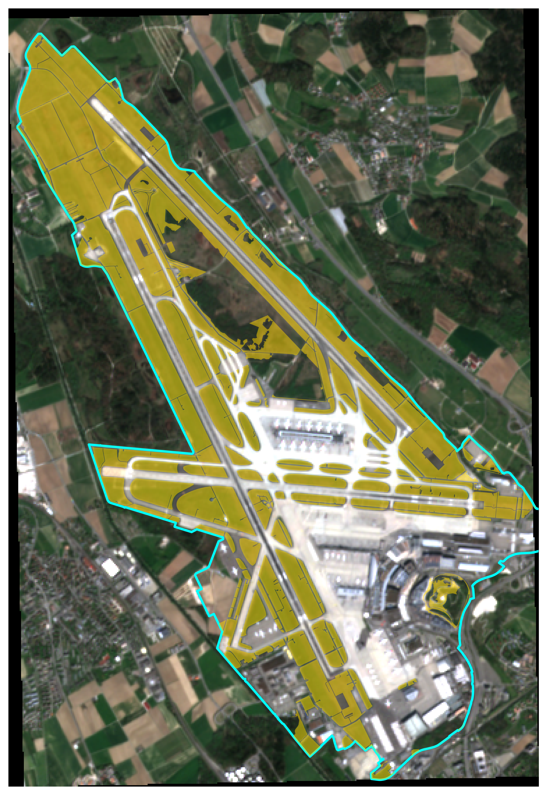
2.1.2 Ground Truth Data
The research group from the Institute for Environment and Natural Resources working on the larger project provided ground truth data for mowing events in the form of a GeoPackage file. The dataset includes the geometry of mown areas and the corresponding date of the event. It covers the period from May 9, 2019, to October 29, 2024, containing a total of 1’899 recorded events.
Figure 2 illustrates the spatial distribution of these events. Due to the large number of overlapping polygons over time, the map uses transparency and different colours to differentiate between events and indicate mowing intensity. Intensive colours represent zones that are mowed more frequently, while lighter colours indicate less intensive management.
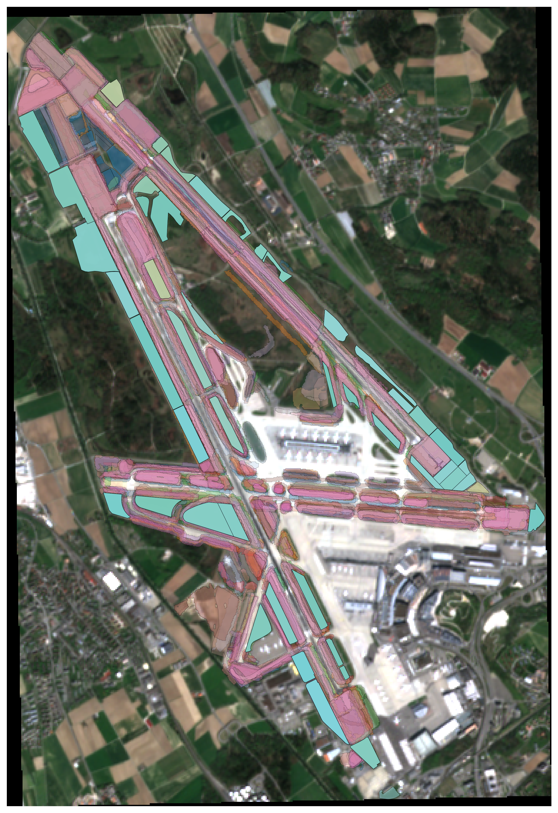
It is important to note that these polygons were originally derived from manual records created by the field staff performing the mowing. These records were then digitized. Consequently, the data contains inherent spatial uncertainties and potential inaccuracies (e.g. overlapping hard surfaces such as runways or buildings) typical of digitized manual logs. This issue is already well visible in Figure 2 and illustrated more closely for an example event in Figure 3 where the polygon overlaps with infrastructure.

2.1.3 Sentinel-2 Satellite Imagery
The remote sensing database consists of a time series of Sentinel-2 multispectral images provided as .tif files. The dataset spans from March 1, 2019, to September 16, 2023, comprising a total of 201 acquisitions. The imagery includes 13 spectral bands, encompassing visible, near-infrared, and short-wave infrared wavelengths, as well as a specific cloud probability band used for quality masking. Since the satellite data ends in September 2023, the effective study period for this project is limited to the overlap between the ground truth and satellite availability (2019–2023).
To verify the data quality, typical vegetation spectral signatures were inspected. Figure Figure 4 shows an example of a standard RGB composite alongside the calculated NDVI, demonstrating the distinct contrast between vegetated and non-vegetated surfaces.
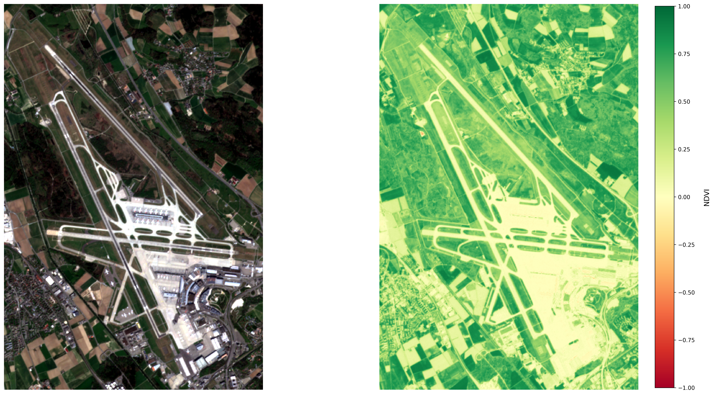
2.1.4 Additional Data for Preprocessing
To ensure the analysis focused exclusively on relevant vegetation, an official cadastral survey dataset was used for data cleaning. The “Official Survey” (Amtliche Vermessung) data was obtained from the GIS browser of the Canton of Zurich (Kanton Zürich 2017). Specifically, the layer Bodenbedeckung_BoFlaeche_Area was utilized. From this dataset, the class “humusiert.Acker_Wiese_Weide” (arable land, meadow, pasture) served as a mask to clean the ground truth polygons where they overlapped with hard surfaces such as runways or buildings or dense vegetation such as bushes. Additionally, the fire brigade responsibility area data, also provided by the Canton of Zurich, was used to limit the final model application to only the airport grounds.
2.2 Data Preprocessing and Mask Generation
2.2.1 Geometric Cleaning of Ground Truth Polygons
Since the raw ground truth polygons contained digitization inaccuracies (e.g. overlapping with runways or buildings), a spatial filtering process was applied in the first step. The polygons were geometrically intersected with the “humusiert.Acker_Wiese_Weide” class from the “Official Survey” dataset. This operation clipped the mowing events to the official boundaries of the grassy areas, ensuring that no paved or more densly vegetated surfaces were included in the training data. This step lead to some large events being split up into multiple smaller fragments. Therefore, a size threshold was applied: any resulting polygon fragment smaller than 400 m² was discarded.
Although these two geometric cleaning steps result in some data loss, they are essential for training the model with clean data. Using faulty data would result in much poorer model performance. Figure 5 demonstrates the impact of these steps, showing how a raw polygon extending onto a building and pavement is clipped to the correct vegetation boundary.
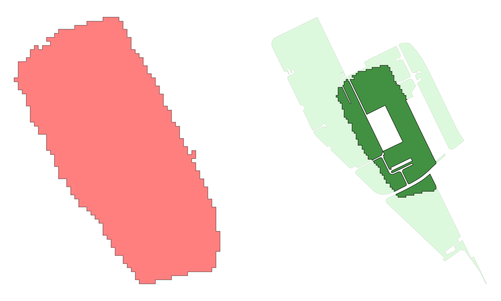
2.2.2 Satellite Data Standardization
To ensure spatial consistency between the satellite imagery and the Swiss coordinate system used for the ground truth data, all Sentinel-2 images were reprojected to the Swiss national standard EPSG:2056 (CH1903+/LV95). This transformation was performed using bilinear resampling. A verification step confirmed that all 201 reprojected images shared the exact same spatial extent, resolution, and pixel grid, which is required for time-series analysis.
2.2.3 Label Generation and Rasterization
In order to prepare the data for a pixel-based machine learning approach, the vector-based ground truth had to be converted into a format that was compatible with the satellite raster grid. To achieve this, all events with the same date were combined to create a binary mask for each unique date.
Using the first Sentinel-2 image as a spatial reference, the cleaned mowing polygons were rasterized. In these binary masks, pixels falling within a mowed polygon were assigned a value of 1 (mowed), while all other pixels were assigned 0 (not mowed). This process resulted in a set of “Ground Truth Masks” that perfectly aligned pixel-for-pixel with the corresponding Sentinel-2 imagery (Figure 6), enabling the direct extraction of spectral signatures for labelled training data.
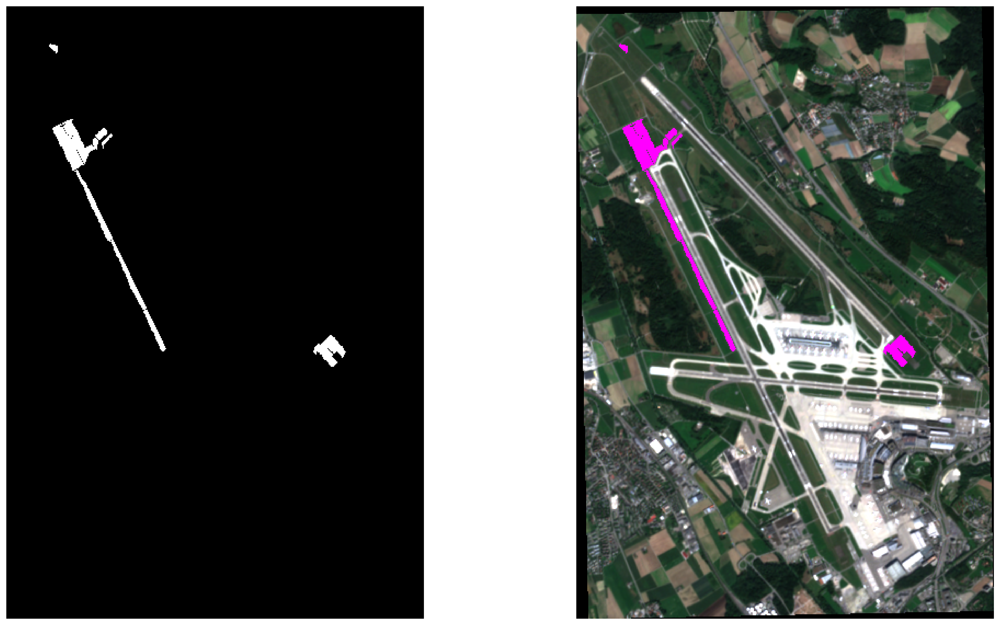
2.3 Feature Engineering
2.3.1 Temporal Matching Strategy
A supervised machine learning model requires labeled examples of both “mowing events” and “non-events.” While the ground truth provides the dates of mowing, defining a “non-event” in a continuously changing biological system is challenging. To address this, a “Temporal Triplet” strategy was implemented for each confirmed ground truth event.
This strategy constructs two distinct classes of samples for every confirmed event, allowing the model to learn the spectral difference between mowing and natural variation:
- Postive Samples (Mowing): These samples represent a true mowing event. They are derived from the spectral change between the pre-event image (\(t_{n-1}\)) and the post-event image (\(t_{n}\)). This captures the abrupt removal of biomass.
- Negative Samples (Not Mowed): These samples represent “normal” conditions. They are derived from the change between the reference image (\(t_{n-2}\)) and the pre-event image (\(t_{n-1}\)). This comparison captures natural growth or stable conditions over a larger time window, acting as a “no-mowing” example for the model.
To generate these samples, three specific Sentinel-2 images were identified for each event based on temporal proximity and cloud-free conditions:
- \(t_{n}\) (Post-event): The first image 1 to 7 days after the event.
- \(t_{n-1}\) (Pre-event): The last clear image 3 to 8 days before the event, using a safety buffer to avoid faulty dates.
- \(t_{n-2}\) (Reference): Image 9 to 20 days before the event.
Justification for these Temporal Windows:
The selection of these specific time windows was driven by preliminary testing, which compared this approach against simply selecting the nearest available images regardless of time gap. While the nearest-neighbor method yielded a larger sample size, it resulted in a “Not Mowed” dataset dominated by image pairs with shorter time differences. In such short intervals, the change in vegetation indices is near zero, making it statistically indistinguishable from atmospheric noise or weak mowing events. This was directly reflected in lower model performance.
By enforcing a larger gap for the reference image (\(t_{n-2}\)), the “Not Mowed” samples capture a more distinct natural growth signal (positive VI change) while still keeping some samples showing relatively steady conditions for better generalization. This shifts the distribution of the negative class away from zero, creating a clearer decision boundary against the negative signal of mowing events. This design choice significantly improved the model’s ability to distinguish true mowing from noise.
2.3.2 Spectral Indices and Feature Calculation
For each sample, a feature vector was constructed consisting of raw spectral bands (Blue, Green, Red, NIR, SWIR) and derived Vegetation Indices (VIs). The raw bands provide the baseline spectral information, while the indices were chosen to highlight specific physiological properties of the grass.
Crucially, for every index, the differential feature (\(\Delta Index\)) was calculated by subtracting the value of the earlier image from the later image (e.g., \(NDVI_{n} - NDVI_{n-1}\)). These differential features are the primary inputs for the model, as they quantify the magnitude of the change rather than the absolute state of the vegetation.
The following five indices were calculated:
NDVI (Normalized Difference Vegetation Index): \[\text{NDVI} = \frac{\text{NIR} - \text{Red}}{\text{NIR} + \text{Red}}\] The NDVI is the standard metric for vegetation health and biomass. It was chosen as the baseline feature because mowing causes a massive reduction in green biomass, which should result in a sharp drop in NDVI values.
GNDVI (Green Normalized Difference Vegetation Index): \[\text{GNDVI} = \frac{\text{NIR} - \text{Green}}{\text{NIR} + \text{Green}}\] Similar to NDVI, but using the green band instead of red. This index is often more sensitive to chlorophyll concentration than NDVI. It was included to see if changes in pigment (stress) are easier to detect than pure biomass loss.
EVI (Enhanced Vegetation Index): \[\text{EVI} = G \cdot \frac{\text{NIR} - \text{Red}}{\text{NIR} + C_1 \cdot \text{Red} - C_2 \cdot \text{Blue} + L}\] Standard coefficients: \(G = 2.5\), \(C_1 = 6\), \(C_2 = 7.5\), \(L = 1\)
The EVI is optimized for dense vegetation where NDVI might “saturate” (stop showing differences). Since airport grass is often dense before mowing, EVI might provide a clearer signal. It also uses the blue band to correct for atmospheric noise.
SAVI (Soil-Adjusted Vegetation Index): \[\text{SAVI} = \frac{\text{NIR} - \text{Red}}{\text{NIR} + \text{Red} + L} \cdot (1 + L)\] Standard groundfactor: \(L = 0.5\)
Mowing often exposes the underlying soil, especially if the grass is cut short. SAVI includes a correction factor to minimize the influence of soil brightness, ensuring the signal comes from the vegetation itself.
NDII (Normalized Difference Infrared Index): \[\text{NDII} = \frac{\text{NIR} - \text{SWIR}}{\text{NIR} + \text{SWIR}}\] The NDII uses Short-Wave Infrared (SWIR) to measure water content in the leaves. Since cut grass dries out quickly (losing water content), this index can often detect mowing events that might be missed by indices that only look at “greenness.”
While all these indices were calculated during the feature engineering step, the subsequent modeling phase (Section 2.4) tests different combinations of them to determine which single index or combination of indices yields the best model performance.
2.3.3 Cloud masking and Sampling
To ensure data integrity, the Sentinel-2 cloud probability band was utilized. A strict threshold of 30% probability was applied: any pixel exceeding this value in any of the triplet images was masked out and excluded from sampling. The cloud masking process is crucial to prevent atmospheric interference from skewing the spectral signatures used for model training.
A balanced dataset was sampled from the valid, cloud-free pixels intersecting with the ground truth masks. To account for the potential spatial shift of the Sentinel-2 images, an additional buffer of 10 metres (equivalent to one pixel) was added to the inside of the polygon borders. This ensured cleaner samples, although it reduced the total number of available samples. A total of 33’368 samples were generated with 54.2% positives and 45.8% negatives. This small imbalance is negligible and helps to ensure that the model is not biased towards the majority class, which is a common issue in anomaly detection tasks.
2.4 Machine Learning Modelling
2.4.1 Feature Importance
Before building the models, the importance of the features (calculated vegetation indices and raw bands) was analysed, using a model based feature selection. This method deploys a simple Random Forest model on the given data and determines which features have the highest impact on the model prediction. Figure 7 shows clearly that the difference between the vegetation index values between two images help the model the most to predict the right label. However, as feature importance metrics can be biased or split among correlated variables, this ranking serves primarily as an approximation. To further analyse the linear dependencies and ensure robust selection, a correlation matrix was calculated (Figure 8).
These two steps are especially important to simplify the model. Redundant or unimportant information (features) should be removed before the model training in order to keep training time low and improve performance. Consequently, indices showing lower predictive power, insufficient correlation with the label or high redundancy (e.g., EVI, SAVI) were excluded from the detailed model evaluation to streamline the analysis. The subsequent results section therefore focuses only on the most effective single indices and the optimized feature sets.
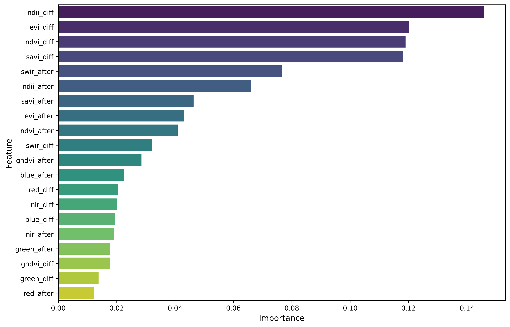
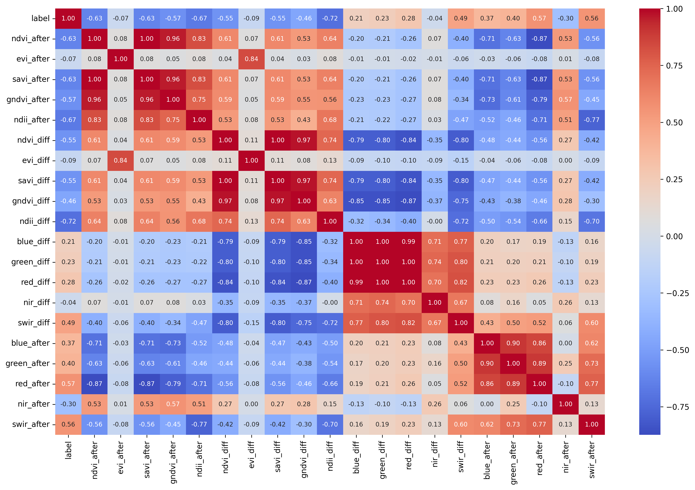
2.4.2 Data Splitting
A critical challenge in pixel-based remote sensing classification is spatial autocorrelation and data leakage. Since multiple pixels are sampled from the same mowing event, a standard random split would likely place pixels from Event A in both the training and test sets, leading to optimistically biased results.
To prevent this leakage, a Group Shuffle Split strategy was employed. The dataset was grouped by the unique match_id (representing a specific event date). The split was performed such that all pixels belonging to a specific mowing event were assigned exclusively to either the training set (80%) or the test set (20%). This ensures that the model is evaluated on its ability to generalize to completely new, unseen events, rather than just unseen pixels from known events.
2.4.3 Model Architecture
Three distinct types of supervised learning algorithms were implemented:
- Random Forest (RF): An ensemble learning method constructing a multitude of decision trees. RF is robust to noise and less prone to overfitting than single trees. It serves as the primary baseline due to its widespread success in remote sensing classification tasks.
- LightGBM (LGBM): A gradient boosting framework that uses tree-based learning algorithms. It is generally faster than Random Forest and can often achieve higher accuracy by learning from the residual errors of previous iterations.
- Support Vector Machine (SVM): A geometric classifier that finds the optimal hyperplane separating the classes. SVMs are effective in high-dimensional spaces but can be computationally expensive for large datasets.
2.4.4 Hyperparameter Tuning and Experimental Design
For each model architecture, two configurations were tested:
- Baseline: Using default hyperparameters to establish a performance benchmark.
- Tuned: Using GridSearchCV with 5-fold cross-validation (Group K-Fold) to optimize key hyperparameters such as the number of estimators, tree depth, and learning rate.
The goal of testing both of these approaches was to evaluate whether more complex models would significantly outperfom their simpler baseline counterparts.
Additionally, the impact of feature selection was assessed by training these models on four different feature subsets:
- NDVI Only: Using only the difference in the NDVI (\(\Delta NDVI\)) as a predictor as this vegetation index is the most broadly used.
- NDII Only: Using only the difference in NDII (\(\Delta NDII\)) to test if moisture change is a better predictor than greenness. This predictor already showed both stronger correlation (Figure 8) with the label and higher feature importance (Figure 7).
- Combined Feature Set: Using a combination of differential indices (\(\Delta NDVI\), \(\Delta NDII\), \(\Delta NIR\), \(\Delta Red\), \(\Delta SWIR\)) and post-event state features (\(SWIR_{after}\), \(NDII_{after}\)) to exploit both change magnitude and absolute spectral properties.
- Hybrid Feature Set: A reduced set of the most important features identified based on previous model runs, aiming to balance model complexity and performance. The features were selected based on their correlation with the label and the strongest feature \(\Delta NDII\). The goal was to add information from features that have a weak correlation to the main feature \(\Delta NDII\) but high correlation with the label. This set contains the following features: \(\Delta NDII\), \(NDII_{after}\), \(\Delta GNDVI\) and \(SWIR_{after}\).
2.4.5 Evaluation Metrics
To assess model performance, the following metrics were calculated on the held-out test set:
- Accuracy: Percentage of all points that the model correctly classified out the total number of points.
- Precision: Fraction of correctly predicted points within a given class out of all points the model assigned to the class.
- Recall (Sensitivity): Fraction of correctly predicted points out of all actual points in that class.
- F1-Score: Harmonic mean of precision and recall, balancing both metrics.
- Confusion Matrix: To visualize the balance between False Positives (predicting mowing when there is none) and False Negatives (missing a mowing event).
- ROC AUC (Area Under the Receiver Operating Characteristic Curve): A threshold-independent metric that evaluates the model’s ability to discriminate between classes across all possible decision thresholds.
2.5 Model Application
While standard metrics like F1-Score and Accuracy provide a quantitative measure of model performance on the test set, they do not account for the spatial coherence of predictions in a real-world scenario. A model might achieve high accuracy by correctly classifying random pixels but fail to reconstruct the contiguous shape of a mowing event.
To address this, the final step of the methodology involved a full-scene application of the best-performing models. This qualitative assessment aims to simulate an operational workflow where the model is applied to entire satellite scenes to detect new events.
2.5.1 Test Scene Selection
To ensure a fair visual evaluation, a specific temporal pair of Sentinel-2 images was selected based on optimal atmospheric conditions. Using the cloud statistics generated during feature engineering, an image pair with the very low cloud coverage over the study area was identified:
- Before Image: August 07, 2020
- After Image: August 12, 2020
- Target Mowing Events: Ground truth records indicate mowing occurred on July 10 and July 11, 2020.
2.5.2 Application Pipeline
The selected models were applied to this image pair using the following pipeline:
- Feature Generation: All relevant spectral features (bands and indices) were calculated for every pixel in the scene.
- Masking: The official survey and fire brigade responsibility areas masks were applied to exclude non-grassland areas (runways, buildings, forests) and limit the prediction to only the airport area. Clouds were again masked using the probability threshold (\(>30\%\)).
- Inference: The trained models predicted the class (Mowed vs. Not Mowed) for all valid pixels. Performance was then evaluated by calculating standard metrics (Accuracy, Precision, Recall, F1-Score) against the ground truth for these specific dates.
- Mapping: The resulting predictions were visualized as maps, colouring true positive predictions cyan, false positives orange and false negatives magenta. This allows for an intuitive assessment of model performance compared to the ground truth data.
- Confusion Matrix: A confusion matrix was generated for the entire scene to quantify the number of true positives, false positives, true negatives, and false negatives in this spatial context in greater detail.
This assessment was performed for a selection of the best performing model configurations for both multiple and single feature sets to determine if the additional complexity of multiple features yields visibly better spatial definitions of the mowing events. To compare the prediction between two distinct models, an additional difference map was created, highlighting areas where the models agreed or disagreed. Finally, a spectral analysis was conducted to understand the reasons behind false predictions.
3 Results
3.1 Model Evaluation on Test Data
The classification models were evaluated on the held-out test set generated via the Group Shuffle Split strategy. This section details the quantitative performance metrics of the tested model architectures, model complexities and feature sets.
A summary of the results for all tested model configurations is visible in Table 1.
Overall, all tested models achieved high performance, with F1-Scores ranging from 0.818 to 0.923. There were no drastic differences in performance between the optimized architectures. The top-performing SVM, Random Forest, and LightGBM models were all within 0.004 of each other in terms of F1-Score. The only significant outliers were the baseline Random Forest models using single features (NDVI or NDII), which performed notably worse than the rest of the models.
3.1.1 Impact of Feature Selection
The comparison between single-index models shows no major difference in the diagnostic value of moisture-sensitive indices over greenness indices. Although the baseline Random Forest model using NDII achieved an F1-Score of 0.860, outperforming the corresponding NDVI-only model (F1-Score of 0.818), this gap narrowed after hyperparameter tuning and the trend even reversed slightly for the other model architectures.
The Multi-feature (8 features) and Hybrid-feature (4 features) sets generally performed minimally better than the single-feature models. Notably, the Hybrid-feature set, which retains only the most predictive variables, achieved the highest scores overall. It slightly (but not significantly) outperformed the full Multi-feature set with most model architectures. This suggests that the additional features in the fuller set may have introduced minor noise or redundancy without adding discriminatory power.
3.1.2 Hyperparameter Tuning and Model Comparison
Hyperparameter tuning had a varied impact depending on the algorithm. For the Random Forest classifier, tuning was critical. The baseline model using NDII achieved a F1-Score of 0.860. After tuning with GridSearchCV, this increased to 0.911. A similar improvement was observed for the NDVI-only Random Forest model (F1-Score of 0.818 to 0.894), while the models using multiple features showed only minor improvements after tuning.
By contrast, hyperparameter tuning had a negligible effect on the LightGBM and SVM architectures, with F1-Score changes of less than 0.01 between the baseline and tuned versions. This suggests that these algorithms are highly robust, even when using the default settings for this specific task.
Comparing the fully tuned architectures using the best-performing Hybrid-Feature set:
- Support Vector Machine (SVM): Achieved the highest overall performance with an F1-Score of 0.923. It demonstrated excellent balance with a Precision of 0.929 and Recall of 0.923.
- Random Forest: Followed closely with an F1-Score of 0.920.
- LightGBM: Achieved an F1-Score of 0.915, ranking third among the tuned architectures, though it achieved the second highest ROC AUC (0.971), indicating excellent ranking ability.
3.1.3 Confusion Matrices and ROC Curves
To illustrate the trade-offs between the different model configurations, a visual analysis of the Confusion Matrices and ROC Curves was conducted. Four representative models are shown here to highlight key findings. The confusion matrices and ROC curves for all tested configurations are available in the Appendix.
Figure 9 illustrates the starting performance using the simple baseline Random Forest with a single feature. The Confusion Matrix (left) reveals a relatively high number of False Positives (480) and False Negatives (698). The ROC curve (right) shows an AUC of 0.936, which serves as the benchmark for subsequent improvements.
Figure 10 demonstrates the gain achieved purely by switching to a tuned Support Vector Machine architecture while keeping the same single feature (ndii_diff). The False Positives dropped drastically from 480 to 81, significantly improving precision. The ROC AUC increased to 0.965, showing a more consistent curve.
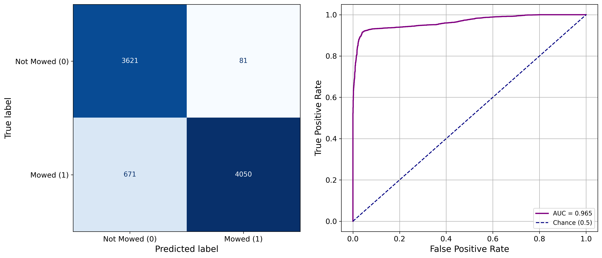
Figure 11 shows the performance of the tuned gradient boosting model with the optimized hybrid-feature set. While it produced slightly more False Positives (187) than the SVM, it achieved the second highest ROC AUC (0.971) of this selection. This indicates excellent separability between classes, suggesting that with threshold adjustment, it could be further optimized.
Figure 12 shows the overall best performing configuration. The Hybrid-feature SVM achieved an optimal balance with minimal errors (87 False Positives, 565 False Negatives). The ROC curve remains high (AUC 0.964), confirming that the selected combination of vegetation difference and state features allows the SVM to construct a robust and conservative decision boundary.
3.2 Model Application on Full Scene
To validate the models in an operational context, the four representative models analysed above were applied to a full Sentinel-2 scene pair (August 07 vs. August 12, 2020) to predict a series of known mowing events. The ground-truth masks of the mowing events occuring between those two image dates showed a total of 2’252 mowed pixels. Table 2 summarizes the key performance metrics for each model when applied to the entire scene. It focuses on the “Mowing” class, as this is the minority class of interest in this “full-scene” application.
| Model | Accuracy | Precision-Mowing | Recall-Mowing | F1-Mowing | F1 Macro |
|---|---|---|---|---|---|
| baseline_rf_ndii | 0.804 | 0.201 | 0.653 | 0.307 | 0.596 |
| tuned_svm_ndii | 0.924 | 0.424 | 0.391 | 0.407 | 0.683 |
| tuned_lgbm_hybrid | 0.697 | 0.166 | 0.880 | 0.279 | 0.543 |
| tuned_svm_hybrid | 0.683 | 0.162 | 0.897 | 0.274 | 0.536 |
| Focus on 'Mowing' class metrics as this is the minority class of interest in this application. | |||||
The quantitative results on the full scene (Table 2) reveal a notable performance drop compared to the test set metrics. While the test set suggested F1-Scores of approximatey 0.90, the operational application yielded Mowing F1-Scores ranging between 0.27 and 0.41. The results highlight a distinct trade-off: Hybrid-feature models achieved high Recall (~0.89) but suffered from extremely low Precision (~0.16) due to over-prediction. In contrast, the Single-feature SVM (NDII-only) provided the most balanced performance, achieving the highest Mowing F1-Score (0.407) and Precision (0.424), even though showing lower Recall (0.391).
3.2.1 Spatial and Quantitative Analysis
The visual results confirm the discrepancy between the test-set metrics and real-world scene application. While the Hybrid-feature models achieved higher F1-Scores on the generated test samples, the spatial prediction maps and the confusion matrices generated for the full scene suggest that the Single-Feature (NDII) Tuned SVM offers the most reliable detection.
Baseline Random Forest (NDII-only): The visual output of the Baseline Random Forest (Figure 13) reveals a significant amount of “salt-and-pepper” noise. While the model correctly identifies the general location of the mowing event, there are numerous scattered orange pixels all over the grass fields. These “speckles” represent false positives, where single trees in the random forest model overreacted to minor spectral fluctuations. This noise is quantified in the confusion matrix (Figure 14), resulting in a low Mowing Precision of 0.201 and a Mowing F1-Score of only 0.307, despite an acceptable Recall of 0.653.
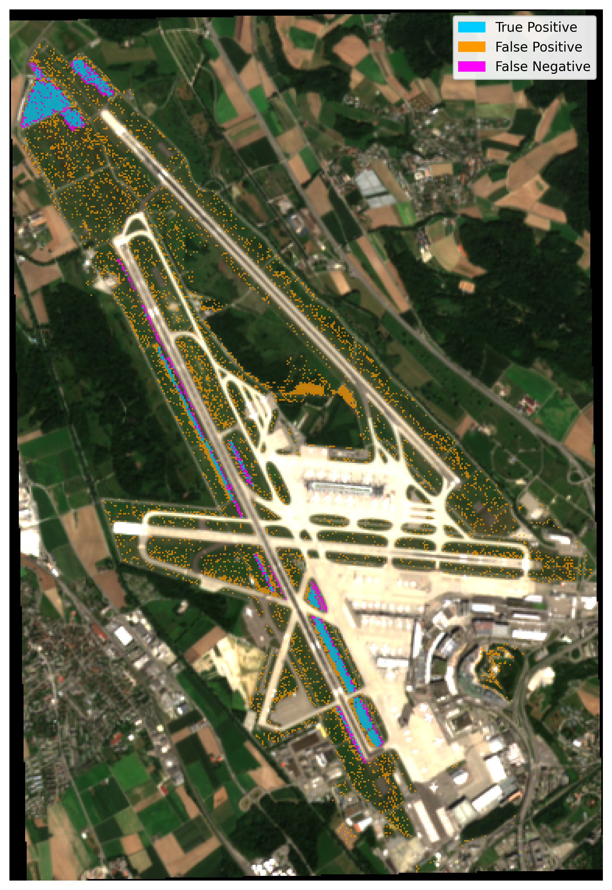
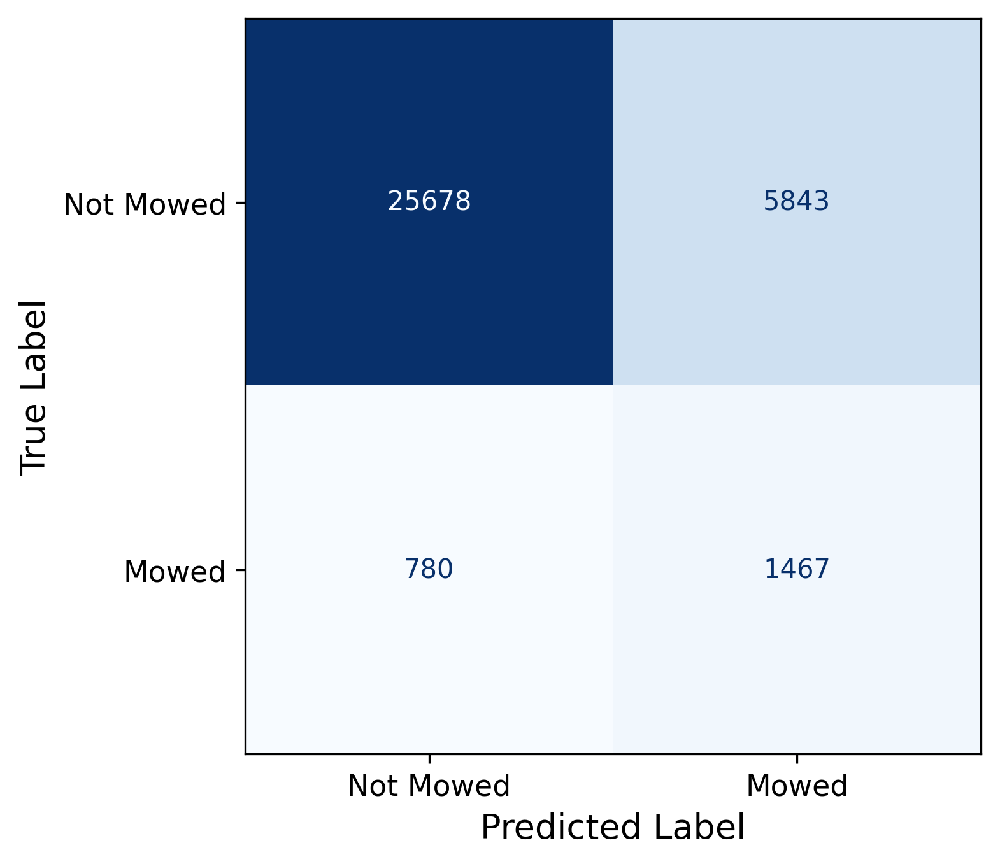
Tuned SVM (NDII-only): Switching to the Tuned SVM (Figure 15 and Figure 16) results in the cleanest prediction map. The scattered noise is almost entirely eliminated, which is confirmed by the highest Accuracy (0.924) and Mowing Precision (0.424) among the applied models. The model produces a contiguous prediction that sticks tightly to the core area of the mowing events. However, this model seems to miss the most mowed pixels out of all applied models, leading to a low Recall of 0.391. Despite this, it achieved the highest Mowing F1-Score of 0.407.
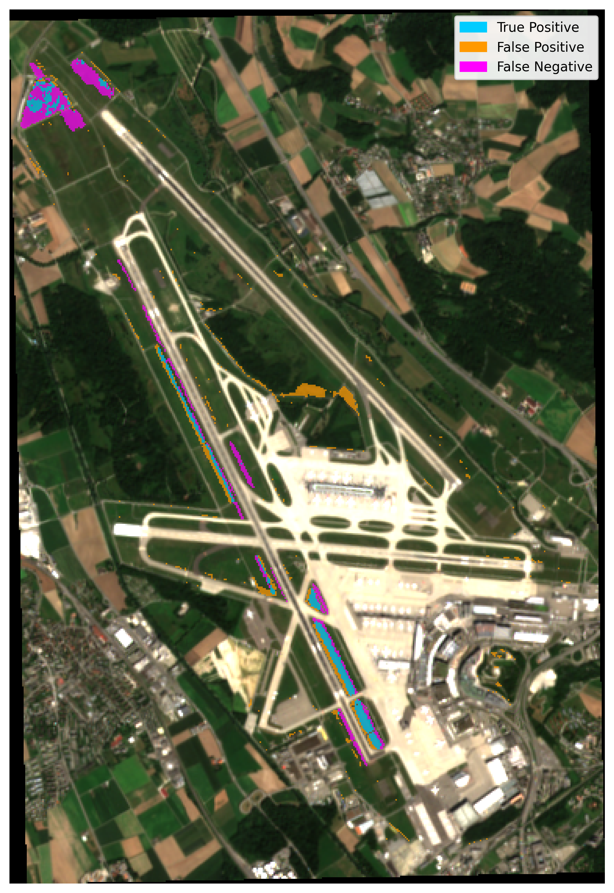
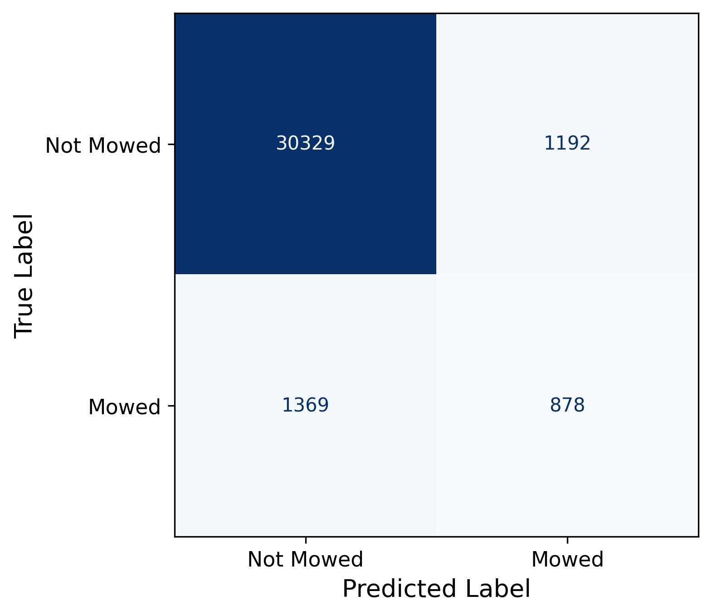
Tuned LightGBM (Hybrid-feature): The Tuned LightGBM with Hybrid features (Figure 17) shows a high tendency to over-predict. While it correctly detects most of the mowing events, achieving a high Recall of 0.880, it flags a significantly larger area than the ground truth polygons indicate. This massive overestimation led to a very low Mowing Precision of 0.166 and a substantial drop in overall Accuracy to 0.697. The confusion matrix (Figure 18) highlights this trade-off: detection is nearly complete, but at the cost of many false alarms.
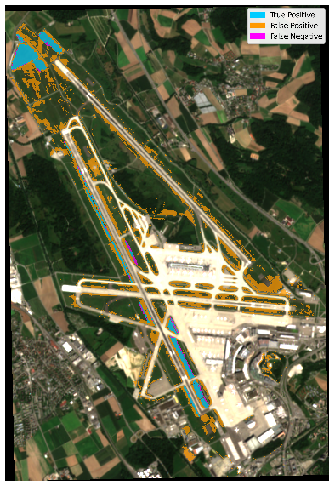

Tuned SVM (Hybrid-feature): Contrary to its status as the “top performer” in the quantitative test set metrics, the Tuned SVM with Hybrid features (Figure 19 and Figure 20) produces a large number of False Positives in this full-scene application, almost identical to the Tuned LGBM with Hybrid features. It predicts mowing across broad areas outside the verified polygons, resulting in a low Precision of 0.162 and an Accuracy of 0.683. This is surprising given its low False Positive count in the test set (only 87 errors), but the high Recall of 0.897 confirms it is highly sensitive to the signal, perhaps too sensitive for operational noise.
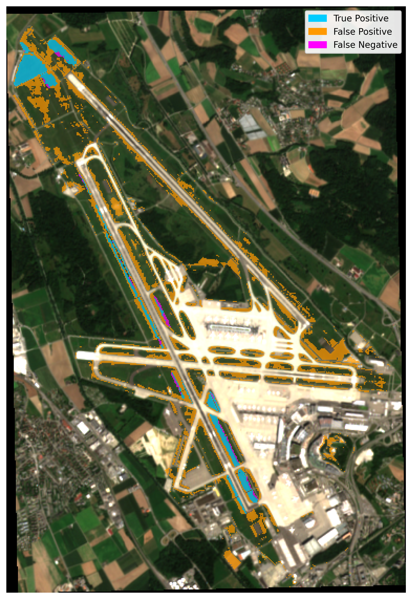
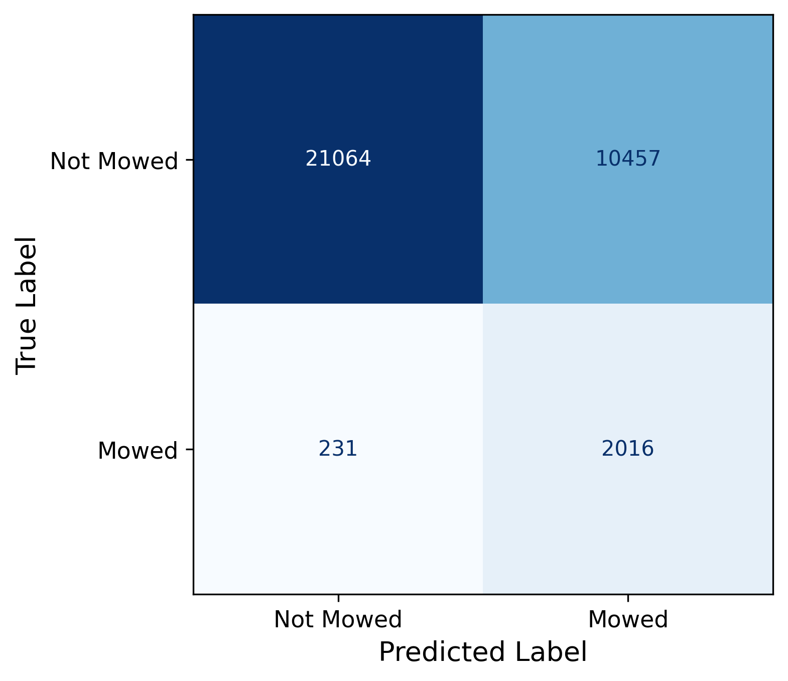
This application of the models was also conducted with some of the other model configurations, leading to similar observations regarding spatial agreement and over-prediction tendencies. Figure 21 provides a direct visual comparison between the predictions of the tuned SVM models using only the ndii_diff and Hybrid-Feature sets. The difference map highlights areas where the two models agreed (Cyan) and disagreed (Orange for NDII-only predictions, Magenta for Hybrid-Feature predictions). It is evident that the Hybrid-Feature model predicts a substantially larger area as mowed, indicating its higher sensitivity but also a greater risk for false alarms.
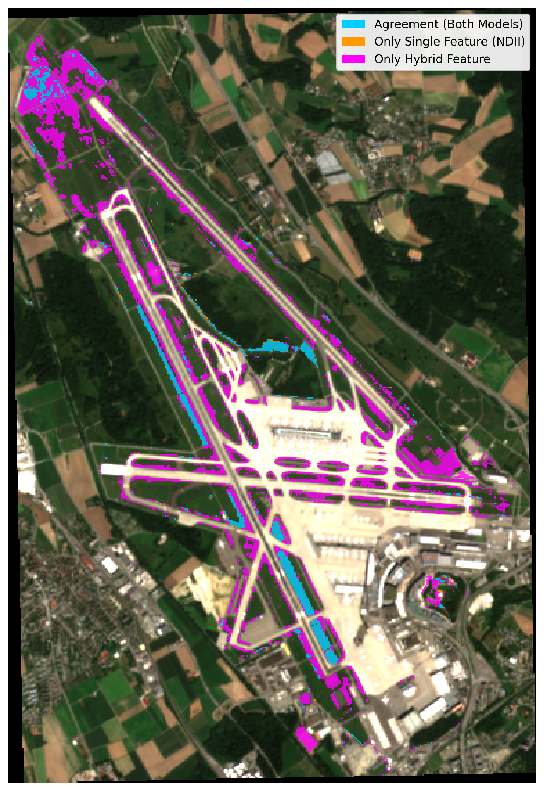
3.2.2 Spectral Analysis of False Positives
To investigate the cause of the over-prediction in the Hybrid-feature model, a spectral analysis was conducted on the disputed pixels (pixels classified as “Mowed” by the Hybrid model but “Not Mowed” by the Ground Truth). Figure 22 compares the distribution of the four hybrid features across three classes: True Mowed pixels, Hybrid False Positives (errors), and True Not Mowed pixels.
The statistical distributions reveal distinct patterns in the error class:
- Change Features (ndii_diff, gndvi_diff): The True Mowed pixels exhibit a strong negative median change in NDII (-0.068) and GNDVI (-0.028). In contrast, the Hybrid False Positives show near-zero or even positive changes (\(\Delta NDII\) -0.006, \(\Delta GNDVI\) +0.008), which are nearly identical to the stable True Not Mowed pixels. This confirms that the false positives did not experience a significant spectral change indicative of disturbance.
- State Features (swir_after, ndii_after): The False Positives exhibit high SWIR reflectance (Median 2659) and very low NDII values (Median 0.005). These values are significantly different from the healthy unmowed grass (\(SWIR\) 2328, \(NDII\) 0.132) but remarkably similar to the dry state of True Mowed areas (\(SWIR\) 2734, \(NDII\) 0.015).
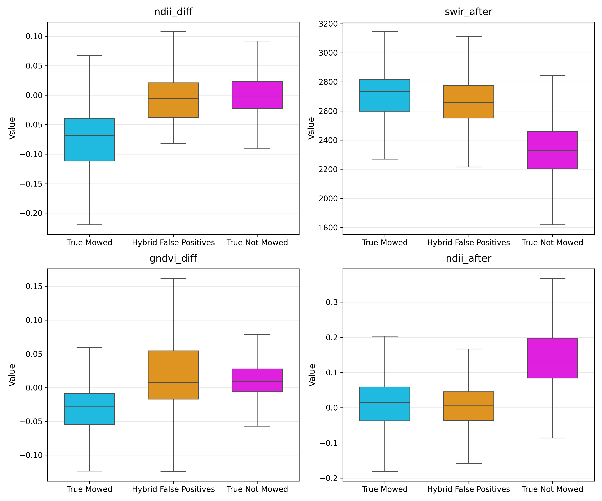
4 Discussion
4.1 Interpretation of Model performance
4.1.1 Algorithm Selection and Complexity
The quantitative evaluation showed that standard pixel-based machine learning algorithms are highly effective for mowing detection. The Tuned Support Vector Machine (SVM) achieved the highest F1-Score (0.923) on the test set. This indicates that, when feature engineering is robust, complex deep learning architectures (such as convolutional neural networks), which are often resource-intensive and require vast amounts of training data, are not strictly necessary for this specific task.
The SVM’s slight superiority over Random Forest and LightGBM suggests that the decision boundary between “mowed” and “not mowed” in the high-dimensional spectral space is well-defined, yet potentially non-linear. Although tree-based models (RF and LGBM) are generally more interpretable, the SVM’s ability to maximise the margin between classes enabled it to maintain a high recall rate (missing fewer events) without compromising precision on clean test data.
4.1.2 Superiority of Moisture-Sensitive Indices
Contrary to the initial hypotheses, the results did not demonstrate the universal superiority of moisture-sensitive indices (NDII) over greenness indices (NDVI) in all configurations. Although the baseline Random Forest model performed significantly better with NDII (F1-Score of 0.860) than with NDVI (F1-Score of 0.818), this performance gap largely disappeared after hyperparameter tuning and when the other model types were tested.
This suggests that, although the “moisture drop” signal (captured by NDII) is initially easier for a simple model to detect, a well-optimised classifier can extract the mowing signal equally well from the “chlorophyll loss” signal (captured by NDVI). This aligns with the findings of Andreatta et al., who emphasised the usefulness of SWIR bands but also noted the reliability of NDVI time series. For operational purposes, this implies flexibility: if SWIR bands are unavailable or unreliable, standard NDVI remains a viable alternative provided the model architecture is tuned appropriately (Andreatta et al. 2022).
4.1.3 Importance of Temporal Resolution and Data Quality
The methodological experiment comparing “Strict Window” matching (3-8 days prior) versus “Flexible/Nearest” matching revealed a crucial operational constraint. The model performance dropped significantly when “Not Mowed” samples were derived from short temporal intervals (e.g., 2 days).
This suggests that the model relies on detecting a deviation from expected growth rather than just a static state. By enforcing a larger temporal gap for the reference image (\(t_{n-2}\)), the training data forced the model to learn the spectral signature of natural growth (positive index change). A mowing event (negative index change) then stands out as a clear anomaly against this trend. Consequently, an operational system benefits from the highest possible revisit rate to ensure the capture of the fleeting “mowed” signal immediately after the event (\(t_n\)) before regrowth occurs. However, reliable detection also necessitates a clear reference image from an earlier timeframe to establish the growth baseline. The primary limitation of optical systems in Zurich is therefore the frequent cloud cover, which often breaks this necessary chain of three clear observations (Reference \(\rightarrow\) Pre \(\rightarrow\) Post), making it difficult to construct valid temporal triplets even with a 5-day satellite revisit cycle.
This project has shown that rigorous data preprocessing is more important than model selection. Without the strict temporal filtering, cloud masking, and geometric cleaning applied in this study, even the most sophisticated algorithm would fail to distinguish true events from environmental noise. The success of the workflow relied heavily on curating a clean, balanced training dataset where the physical signal of change was explicitly isolated from the background noise of stable vegetation.
4.2 Operational Applicability and Spatial Constraints
4.2.1 The Trade-off Between Metric Optimization and Spatial Robustness
A critical finding of this study is the discrepancy between quantitative test metrics and qualitative spatial performance. While the “Hybrid” feature set (combining change vectors with absolute state features) achieved the highest F1-Scores on the test set, it performed poorly when applied to full satellite scenes, generating significant over-prediction errors.
This over-prediction was quantitatively confirmed by the sharp drop in Precision for the Mowing class in the full-scene application (dropping to ~0.16 for hybrid models). The spectral analysis of these false positives (Figure Figure 22) showed that the main cause for this is most likely overfitting to environmental noise. The disputed pixels exhibited no significant moisture change (\(\Delta NDII \approx 0\)), meaning no mowing occurred. However, they possessed high absolute SWIR reflectance and low NDII values, which are spectral characteristics typical of bare soil or dry vegetation the model falsely associated with mowing.
By including additional features (like swir_after and gndvi_diff), the model dimensionality increased, allowing it to learn faulty correlations. It effectively learned to classify “dry/bright surfaces” as mowed, even in the absence of a change signal. In the controlled environment of the test set, which consists of cleaner, selected samples, these features helped resolve edge cases. However, in the heterogeneous environment of a full airport scene, they acted as distractors. This illustrates a classic “Curse of Dimensionality” problem: adding features increased precision on the training distribution but reduced robustness on the out-of-distribution noise found in real-world application.
Consequently, the simpler Single-Feature models (NDII- and NDVI-only), which rely exclusively on the physical change signal, proved to be superior for operational monitoring despite scoring slightly lower on standard metrics.
4.2.2 Geolocation Uncertainty and Edge Effects
The visual assessment of the full scenes revealed a systematic spatial offset between the model predictions and the ground truth polygons. While the model correctly identified the rough shape and size of the mowing events, the pixels were often shifted by one or two pixel units relative to the polygon masks.
This disagreement is likely not a model failure but a result of inherent data limitations. The Sentinel-2 Level-2A product currently has a geometric uncertainty (RMSE) of roughly 12.5 meters (equals 1.25 pixels) (S2 MSI ESL Team 2023). Meanwhile the ground truth data were digitalized from areas marked on papermaps by hand, adding to the uncertainty of accuracy. This misalignment artificially lowers the calculated pixel-wise performance metrics (creating false positives/negatives at polygon edges) and likely causes a performance plateau that cannot be overcome by better modeling. Buffering the ground truth polygons during sampling showed a small improvement in model metrics.
4.3 Conclusion and Outlook
The objective of this project was to assess the feasibility of detecting mowing events at Zurich Airport using automated machine learning workflows on Sentinel-2 satellite imagery.
The results confirm that an automated detection system is feasible using open-source optical data, provided that specific feature selection strategies are employed to mitigate environmental noise. The study validated that standard machine learning algorithms, particularly the Support Vector Machine (SVM), are sufficient for this task. While moisture-sensitive indices (NDII) provide a stronger baseline signal than greenness indices (NDVI), optimized models perform comparably well with either. Most importantly, the investigation highlighted the importance of simplicity in feature choice. Although adding complex static features improved test scores, it introduced significant noise in real-world applications. The robust “change-only” approach (using ndii_diff) proved to be the most reliable method for operational use, despite scoring lower on theoretical test metrics compared to complex hybrid models. At the same time, the study showed that careful data collection and preprocessing (cloud masking, temporal filtering, geometric cleaning) are extremely important when working with optical remote sensing data. The quality of the results was driven less by the choice of algorithm complexity and more by the integrity of the input data.
Despite these successes, the operational reliability of the system faces inherent environmental constraints. The reliance on optical imagery creates unavoidable data gaps due to cloud cover. These gaps frequently break the necessary temporal chain of observations, specifically the need for an immediate post-event image combined with a stable reference image from an earlier timeframe, making it difficult to reliably distinguish mowing from natural growth. Additionally, the geometric precision of Sentinel-2 limits the system’s ability to monitor small, fragmented edges with the high accuracy required for detailed biodiversity studies.
To address these limitations and transition from a prototype to a fully operational tool, future work should focus on two main areas. First, as suggested by Reinermann et al., integrating Synthetic Aperture Radar (SAR) data from Sentinel-1 would effectively solve the cloud cover challenge (Reinermann et al. 2022). Since Radar can penetrate clouds and is sensitive to surface roughness (texture) rather than just color, it provides a complementary signal that could resolve the ambiguities between dry soil and mowed grass.
Second, the current pixel-based approach could be enhanced by incorporating spatial context. Moving towards Semantic Segmentation or Object-Based Image Analysis (OBIA) would allow the model to consider the status of surrounding pixels, ensuring more contiguous predictions and reducing salt-and-pepper noise. Alternatively, applying simple post-processing steps, such as morphological operations, could also help to smooth the final detection maps and improve spatial consistency.
5 Statement of Reproducibility
All code developed for data processing, model training, and deployment is fully available in the project’s GitHub repository. While the specific ground truth data provided by Zurich Airport is confidential and cannot be publicly shared, the code structure allows for the reproduction of the workflow using similar datasets. The satellite, official survey and fire brigade responsibility area data are all openly available on the corresponding websites.
To ensure reproducibility, maintainability, and simple reusability, set seeds were used and the codebase was refactored into documented, modular functions. This prevents code duplication and allows specific steps, such as the temporal triplet generation or the model application to be reused independently. Key configuration variables and hard-to-tune parameters (e.g., temporal window sizes, cloud probability thresholds, features to use) are declared at the top of the notebooks to facilitate adaptation to new research questions.
Project version control was managed via GitHub. All computational tasks, including data preprocessing and model training, were optimized to run on standard local hardware.
6 References
Andreatta, Davide, Damiano Gianelle, Michele Scotton, Loris Vescovo, and Michele Dalponte. 2022. “Detection of Grassland Mowing Frequency Using Time Series of Vegetation Indices from Sentinel-2 Imagery.” GIScience & Remote Sensing 59 (February): 481–500. https://doi.org/10.1080/15481603.2022.2036055.
De Vroey, Mathilde, Julien Radoux, and Pierre Defourny. 2021. “Grassland Mowing Detection Using Sentinel-1 Time Series: Potential and Limitations.” Remote Sensing 13 (3). https://doi.org/10.3390/rs13030348.
DeVault, Travis L., Jerrold L. Belant, Bradley F. Blackwell, and Thomas W. Seamans. 2011. “Interspecific Variation in Wildlife Hazards to Aircraft: Implications for Airport Wildlife Management.” Wildlife Society Bulletin 35 (4): 394–402. https://doi.org/https://doi.org/10.1002/wsb.75.
Drusch, M., U. Del Bello, S. Carlier, O. Colin, V. Fernandez, F. Gascon, B. Hoersch, et al. 2012. “Sentinel-2: ESA’s Optical High-Resolution Mission for GMES Operational Services.” Remote Sensing of Environment 120: 25–36. https://doi.org/https://doi.org/10.1016/j.rse.2011.11.026.
Flughafen Zürich AG. n.d. “ZRH.” n.d. https://newsroom.flughafen-zuerich.ch/asset/1041879/zrh-rd-b007-0038.
Garioud, Anatol, Sébastien Giordano, Silvia Valero, and Clément Mallet. 2019. “Challenges in Grassland Mowing Event Detection with Multimodal Sentinel Images.” In 2019 10th International Workshop on the Analysis of Multitemporal Remote Sensing Images (MultiTemp), 1–4. https://doi.org/10.1109/Multi-Temp.2019.8866914.
Komisarenko, Viacheslav, Kaupo Voormansik, Radwa Elshawi, and Sherif Sakr. 2022. “Exploiting Time Series of Sentinel-1 and Sentinel-2 to Detect Grassland Mowing Events Using Deep Learning with Reject Region.” Scientific Reports 12 (1): 983. https://doi.org/10.1038/s41598-022-04932-6.
Pettorelli, Nathalie, Jon Olav Vik, Atle Mysterud, Jean-Michel Gaillard, Compton J. Tucker, and Nils Chr. Stenseth. 2005. “Using the Satellite-Derived NDVI to Assess Ecological Responses to Environmental Change.” Trends in Ecology & Evolution 20 (9): 503–10. https://doi.org/10.1016/j.tree.2005.05.011.
Reinermann, Sophie, Ursula Gessner, Sarah Asam, Tobias Ullmann, Anne Schucknecht, and Claudia Kuenzer. 2022. “Detection of Grassland Mowing Events for Germany by Combining Sentinel-1 and Sentinel-2 Time Series.” Remote Sensing 14 (7). https://doi.org/10.3390/rs14071647.
S2 MSI ESL Team. 2023. “Data Quality Report: Sentinel-2 L1C MSI – March 2023.” Issue 85.0 OMPC.CS.DQR.01.02-2023. European Space Agency (ESA). https://sentinels.copernicus.eu/documents/247904/4868341/OMPC.CS.DQR.001.02-2023+-+i85r0+-+MSI+L1C+DQR+March+2023.pdf.
Appendix
Appendix A: Full Model Evaluation Results
This appendix contains the additional Confusion Matrices and ROC Curves for all tested model configurations (Baseline/Tuned for RF, LGBM, and SVM across four feature sets) that were not already shown in the results section.
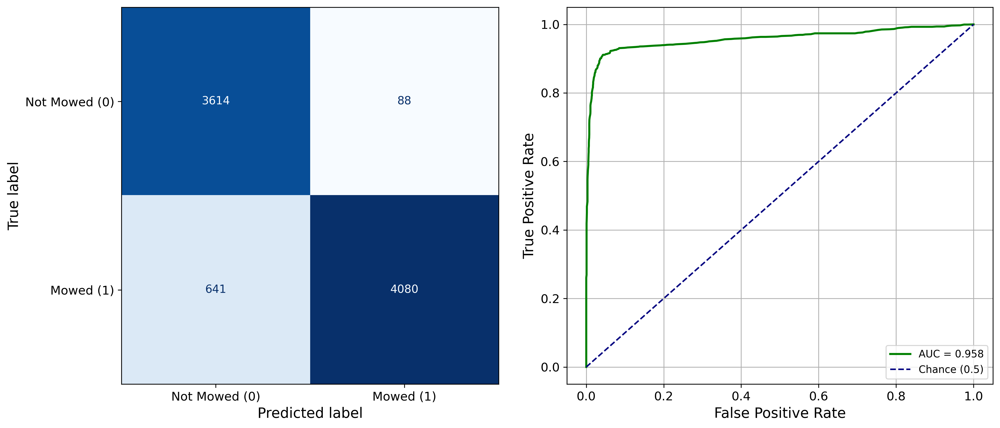
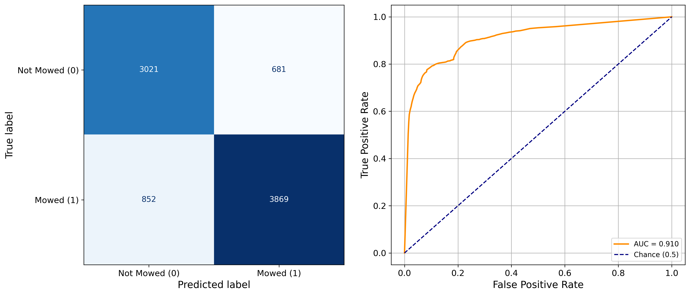
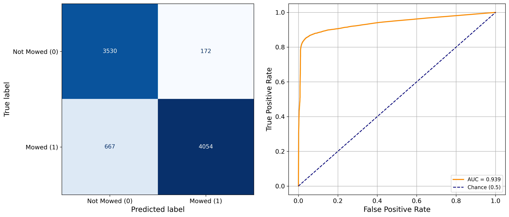